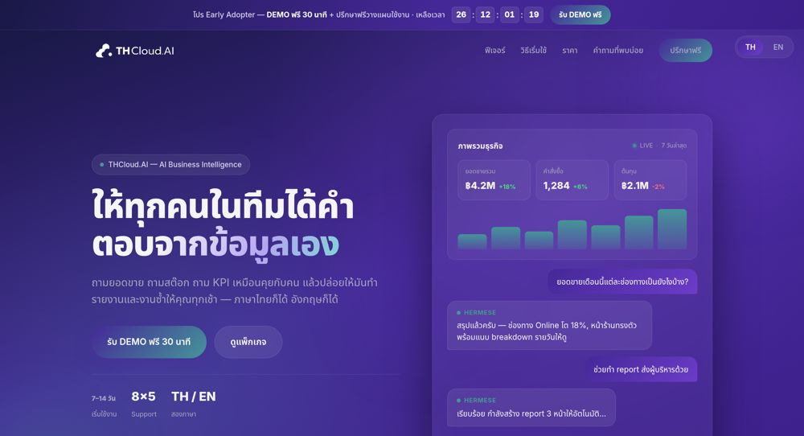
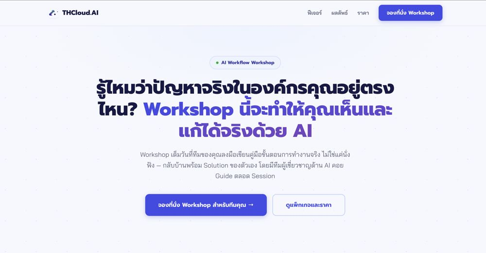

I build the machine behind marketing.ฉันสร้างระบบที่อยู่เบื้องหลังการตลาด
Technical marketer, ex-developer. I run the ads, wire up the data, and automate the boring parts, so a small team can move like a big one. (Also, I have a very fluffy boss. Scroll down.)นักการตลาดสายเทคนิค อดีตนักพัฒนา ฉันดูแลโฆษณา เชื่อมข้อมูล และทำให้งานน่าเบื่อรันเอง เพื่อให้ทีมเล็กขยับได้เหมือนทีมใหญ่ (อ้อ ฉันมีเจ้านายขนฟูมากคนนึง เลื่อนลงไปดูได้เลย)
See my workดูผลงานDownload resumeดาวน์โหลดเรซูเม่Aboutเกี่ยวกับฉัน
PLAYER PROFILEI learned to build before I learned to sell. At PTT I turned messy requirements into GIS software that engineers actually used. Marketing turned out to be the same puzzle with a different customer.ฉันเรียนรู้การสร้างก่อนจะเรียนรู้การขาย ที่ ปตท. ฉันเปลี่ยนความต้องการที่ยังไม่ชัดให้เป็นซอฟต์แวร์ GIS ที่วิศวกรใช้งานจริง แล้วพบว่าการตลาดก็คือโจทย์เดียวกัน แค่เปลี่ยนลูกค้า
Now I run the whole marketing workflow at THCloud.AI, a B2B AI consultancy. Ads on Meta (Facebook and Instagram), with LinkedIn tested. Lead tracking from the first click to the closed deal. A handover to sales. A monthly Metabase dashboard. Videos, landing pages, and an AI agent that brings me content ideas every day.ตอนนี้ฉันดูแลงานการตลาดทั้งกระบวนการที่ THCloud.AI บริษัทที่ปรึกษา AI แบบ B2B ตั้งแต่โฆษณาบน Meta (Facebook, Instagram) และทดลอง LinkedIn ติดตามลีดตั้งแต่คลิกแรกจนปิดดีล ส่งต่อให้ทีมขาย แดชบอร์ด Metabase รายเดือน วิดีโอ landing page และ AI agent ที่เอาไอเดียคอนเทนต์มาให้ทุกวัน
I like the workaround-first approach: when a tool is missing, I build a small one. (My lead form runs on Apps Script and sends leads straight to the sales team.) I do my best work on small, fast teams, and I'm looking for Marketing Operations, Analytics and Growth roles.ฉันชอบแนวทางหาทางเลี่ยงก่อน ถ้าขาดเครื่องมือก็สร้างอันเล็กๆ เอง (ฟอร์มรับลีดของฉันรันบน Apps Script และส่งลีดไปถึงทีมขายทันที) ฉันทำงานได้ดีที่สุดในทีมเล็กที่ไว และตอนนี้กำลังมองหางานด้าน Marketing Operations, Analytics และ Growth
How I workวิธีทำงานของฉัน
THE WORKFLOWOne loop, from the first ad impression to the revenue line, and I own every step.หนึ่งลูป ตั้งแต่โฆษณาแรกที่คนเห็นไปจนถึงรายได้ และฉันดูแลทุกขั้น
And the content loop that feeds itและลูปคอนเทนต์ที่ป้อนระบบนี้
Things I can do for your teamสิ่งที่ฉันช่วยทีมคุณได้
Skillsทักษะ
INVENTORYMarketingการตลาด6
Analytics & BIวิเคราะห์ข้อมูล & BI5
AI & automationAI & ออโตเมชัน5
Toolsเครื่องมือ7
Project managementการบริหารโปรเจกต์6
Creativeงานครีเอทีฟ6
Experienceประสบการณ์
QUEST LOGTechnical Marketing OfficerTechnical Marketing Officer (เจ้าหน้าที่การตลาดเทคนิค)THCloud.AI · B2B AI consulting, ThailandTHCloud.AI · บริษัทที่ปรึกษาและโซลูชัน AI แบบ B2B
- Paid media: Meta ads (Facebook and Instagram) plus a LinkedIn test, tuned for qualified leads, not clicks. GA4 and pixel tracking on the landing pages.โฆษณา: โฆษณา Meta (Facebook, Instagram) และทดลอง LinkedIn ปรับเพื่อลีดที่มีคุณภาพ ไม่ใช่แค่คลิก และติดตั้ง GA4 กับ pixel บน landing page
- Lead flow: lead-status tracking, BANT + Fit criteria and a handover sheet to sales. about 40% of MQLs became SQLs in 2026.กระบวนการลีด: ติดตามสถานะลีด เกณฑ์ BANT + Fit และชีตส่งต่อให้ทีมขาย ม.ค.–ต.ค. 2026 MQL เป็น SQL ประมาณ 40%
- Reporting: monthly Metabase dashboard for leadership, from ad spend to closed deals, plus daily monitoring. AI agents with MCP tools pull the ad data and audience insights.รายงาน: แดชบอร์ด Metabase รายเดือนให้ผู้บริหาร ตั้งแต่ค่าโฆษณาถึงดีลที่ปิด พร้อมติดตามรายวัน และให้ AI agent ผ่าน MCP ดึงข้อมูลแอดกับ insight ของกลุ่มเป้าหมาย
- Operations: the planning and KPI framework: workflows, report templates and inter-team forms, reviewed by an external ISO consultant.ระบบงาน: กรอบแผนงานและ KPI ทั้ง workflow เทมเพลตรายงานและฟอร์มระหว่างทีม ผ่านการตรวจโดยที่ปรึกษา ISO ภายนอก
- Automation: an AI agent sends daily content ideas to Discord, built on a filtered, scraped news feed, with a weekly analysis for the next batch; it can also run monthly or on demand. I also advised on the company's social-scraping product and built the data store behind it.ออโตเมชัน: AI agent ส่งไอเดียคอนเทนต์ให้ทาง Discord ทุกวันจากฟีดข่าวที่ดึงมาและกรองแล้ว และวิเคราะห์รายสัปดาห์เพื่อต่อยอด รันรายเดือนหรือตามสั่งก็ได้ ฉันยังเป็นที่ปรึกษาโปรดักต์ social-scraping ของบริษัทและสร้างแหล่งข้อมูลให้
- Content: video from concept and script to shoot, voiceover and publishing, plus a posting system for LinkedIn, YouTube and TikTok since Oct 2026.คอนเทนต์: วิดีโอตั้งแต่ไอเดีย สคริปต์ ถ่ายทำ พากย์เสียง จนเผยแพร่ และระบบโพสต์ LinkedIn, YouTube, TikTok ตั้งแต่ ต.ค. 2026
- Delivery: designed and built the official landing pages myself (AI workshop; product page), from mood and copy to UI mockups, countdown and lead forms into Google Sheets via Apps Script. BD supplies product and pricing details. PM lead on a client website; project coordinator and business-solution consultant for two more clients, analyzing requirements and presenting solutions. I also advise the dev team on scope and trade-offs.การส่งมอบ: ออกแบบและสร้าง landing page ทางการเองทั้งหมด (เวิร์กชอป AI และหน้าสินค้า) ตั้งแต่โทนอารมณ์ ข้อความ UI ตัวอย่าง เวลานับถอยหลัง ไปจนถึงฟอร์มส่งลีดเข้า Google Sheets ผ่าน Apps Script โดย BD ให้รายละเอียดสินค้าและราคา และเป็น PM lead เว็บลูกค้าหนึ่งราย และเป็น project coordinator กับที่ปรึกษา business solution ให้ลูกค้าอีกสองราย วิเคราะห์ requirement และนำเสนอ solution พร้อมเป็นที่ปรึกษาทีม dev เรื่องขอบเขตและการตัดสินใจ
Software Developer & Project CoordinatorSoftware Developer & Project CoordinatorBusiness Services Alliance · PTT GroupBusiness Services Alliance · กลุ่ม ปตท.
- Build: developed, maintained and debugged the systems; designed the land and legal assets database.พัฒนา: เขียน ดูแล และแก้บั๊กระบบ ออกแบบฐานข้อมูลสินทรัพย์ที่ดินและกฎหมาย
- Run: main administrator for the department's applications; supported users.ดูแลระบบ: เป็นผู้ดูแลหลักของแอปพลิเคชันในหน่วยงานและช่วยผู้ใช้
- Coordinate: gathered requirements, wrote test cases, ran UAT with clients and tracked progress to delivery.ประสานงาน: รวบรวมความต้องการ เขียน test case ทำ UAT กับลูกค้า และติดตามงานจนส่งมอบ
Level-ups between rolesเก็บเลเวลระหว่างเปลี่ยนงานCourses during two job-search periodsคอร์สในช่วงหางาน 2 ช่วง
- UX/UI design (UXUI Studio, Unlock Skills) and Business Innovation (TUXSA, Thammasat University × Skillane, online).UX/UI design (UXUI Studio, Unlock Skills) และ Business Innovation (TUXSA ธรรมศาสตร์ × Skillane ออนไลน์)
- Digital marketing exam (SKILLKAMP × KBank & Partners).สอบ Digital marketing (SKILLKAMP × KBank & Partners)
Creative intern · 2nd AD internCreative intern · 2nd AD internTwo Shot Studio · WeTV "My Engineer"Two Shot Studio · WeTV "My Engineer"
- Brainstormed with clients and the team, researched ideas, drew storyboards and planned shoots.ระดมความคิดกับลูกค้าและทีม หาข้อมูลไอเดีย วาดสตอรีบอร์ด และวางแผนการถ่ายทำ
- Cast presenters, prepared products and managed the project budget.คัดเลือกพรีเซนเตอร์ เตรียมสินค้า และดูแลงบประมาณโปรเจกต์
- Wrote daily call sheets and coordinated cast and crew on set.ทำ call sheet รายวันและประสานงานนักแสดงกับทีมงานหน้ากอง
Side quests at Mahidol ICT: head of stand cheer, leader of the female basketball team, MC at Public Speaking and Open House (2017–20). Also won the faculty freshman award for best video editing (edited, green-screened and scored our team clip).กิจกรรมที่ ICT มหิดล: หัวหน้าสแตนด์เชียร์ หัวหน้าทีมบาสเกตบอลหญิง พิธีกร Public Speaking และผู้นำเสนอ Open House (2017–20) และได้รางวัลตัดต่อวิดีโอยอดเยี่ยมของเฟรชชี่คณะ (ตัดต่อ กรีนสกรีน ใส่เพลงและเอฟเฟกต์ให้คลิปของกลุ่ม)
Workผลงาน
LOOT · HOW I THINKSix projects, told as ideas and sample data. The real thing? Happy to show it in an interview.หกโปรเจกต์ เล่าเป็นแนวคิดและข้อมูลสมมติ ส่วนของจริง ยินดีเปิดให้ดูตอนสัมภาษณ์
📈CASE 1Marketing-to-revenue dashboardแดชบอร์ดจากการตลาดสู่รายได้Metabase · funnel thinkingMetabase · คิดแบบฟันเนลOPEN
The problemโจทย์
Ad spend, leads and deals lived in different places, so nobody could answer a simple question: is marketing working?ค่าโฆษณา ลีด และดีลอยู่คนละที่ จึงตอบไม่ได้ว่า การตลาดได้ผลไหม
My approachวิธีที่ฉันทำ
I agreed on definitions first (what counts as a lead, an MQL, an SQL), then pulled daily ad data and lead data from the CRM and team chat into one chain from spend to closed deal. The dashboard answers three questions: what we spent, what it produced (MQL, SQL, ROAS, ROI and closed-deal value), and where leads drop off. One monthly view for leadership, one daily view for me. The monthly report that used to take me about 4–7 days now has its main build done in about 1 day, because the daily data pulls and the dashboard are already in place (my own estimate; special cases still take 2–4 days).ฉันตกลงนิยามก่อน (อะไรคือลีด MQL SQL) แล้วเชื่อมสายตั้งแต่ค่าโฆษณาถึงดีลที่ปิด แดชบอร์ดตอบ 3 คำถาม: ใช้เงินไปเท่าไร ได้อะไรกลับมา และลีดหลุดตรงไหน มีมุมมองรายเดือนสำหรับผู้บริหาร และรายวันสำหรับฉัน รายงานประจำเดือนที่เคยใช้ราว 4–7 วัน ตอนนี้ขึ้นโครงหลักได้ในราว 1 วัน เพราะดึงข้อมูลรายวันและมีแดชบอร์ดรออยู่แล้ว (เป็นการประเมินของฉันเอง ส่วนเคสพิเศษยังใช้อีกราว 2–4 วัน)
SAMPLE DATA · ILLUSTRATION ONLYข้อมูลสมมติ · ใช้เพื่อประกอบภาพ
What I took from itสิ่งที่ได้เรียนรู้
Define terms before building charts. And show the drop-off between steps, not only the totals, because that is where the fixes are.นิยามคำให้ตรงกันก่อนสร้างกราฟ และแสดงจุดที่หลุดระหว่างขั้น ไม่ใช่แค่ยอดรวม เพราะตรงนั้นคือจุดที่ต้องแก้
🤖CASE 2AI content agentAI content agentScraped feed · schedules · human in the loopฟีดที่ดึงมา · ตั้งรอบได้ · มีคนตัดสินใจเสมอOPEN
The problemโจทย์
Content ideas took hours of scrolling and were often stale or random.การหาไอเดียคอนเทนต์ใช้เวลาเลื่อนหาเป็นชั่วโมง และมักเก่าหรือสุ่ม
My approachวิธีที่ฉันทำ
I collect and filter the news feed first, so the AI only sees relevant material. The agent turns it into content ideas and posts them to the team chat. A human approves, and an analysis feeds the next batch. It runs daily, weekly, monthly or on demand, and it works with any chat channel: I run it on a bot I built myself and have connected others.ฉันดึงและกรองฟีดข่าวก่อน ให้ AI เห็นแต่เรื่องที่เกี่ยวข้อง เอเจนต์สรุปเป็นไอเดียแล้วส่งเข้าแชทของทีม มีคนอนุมัติ และมีการวิเคราะห์ส่งต่อเป็นรอบถัดไป ตั้งรอบได้ทั้งรายวัน รายสัปดาห์ รายเดือน หรือตามสั่ง และเชื่อมกับแชนเนลใดก็ได้ ฉันรันบนบอตที่สร้างเอง และเคยเชื่อมช่องทางอื่นแล้ว
What I took from itสิ่งที่ได้เรียนรู้
Clean the input before adding AI, keep a human at the decision point, and don't tie the system to one tool.ทำความสะอาดข้อมูลก่อนใส่ AI ให้คนอยู่ตรงจุดตัดสินใจ และไม่ผูกระบบไว้กับเครื่องมือตัวเดียว
🧱CASE 3Planning & work managementการวางแผนและจัดการงานPlans · KPIs · reportingแผน · KPI · รายงานOPEN
The problemโจทย์
Marketing ran on habits in people's heads. Hard to hand over, hard to review, hard to repeat.การตลาดวิ่งตามความเคยชินในหัวคน ส่งต่อยาก ตรวจสอบยาก ทำซ้ำยาก
My approachวิธีที่ฉันทำ
I wrote it down as layers: the annual plan, campaign plans, KPIs, workflows, report templates and forms between teams. An external ISO consultant reviewed it. Day to day I plan in sheets, produce media graphics in Canva, and keep progress reports and dev plans on GitHub, which my manager likes. Much of it is still manual, so I'm learning the GitHub CLI to automate the routine parts.ฉันเขียนออกมาเป็นชั้นๆ: แผนประจำปี แผนแคมเปญ KPI workflow เทมเพลตรายงาน และฟอร์มระหว่างทีม โดยมีที่ปรึกษา ISO ภายนอกตรวจ งานประจำวันวางแผนบนชีต ทำกราฟิกสื่อใน Canva และเก็บรายงานความคืบหน้ากับแผนฝั่ง dev บน GitHub ซึ่งหัวหน้าชอบ ตอนนี้ยังทำมือหลายส่วน จึงกำลังศึกษา GitHub CLI เพื่อทำส่วนที่ซ้ำให้อัตโนมัติ
What I took from itสิ่งที่ได้เรียนรู้
A process that is written down can be run, checked and improved by anyone, not just by me.กระบวนการที่เขียนไว้ ใครก็รัน ตรวจ และปรับปรุงได้ ไม่ใช่แค่ฉัน
📄CASE 4Landing pages I design and buildLanding page ที่ฉันออกแบบและสร้างเองProduct page · workshop page · lead formsหน้าสินค้า · หน้าเวิร์กชอป · ฟอร์มรับลีดOPEN
The problemโจทย์
Ads and search only work if there is a page ready to turn visitors into leads. And a page has to feel right for the product, not just list features.โฆษณาและการค้นหาจะได้ผลก็ต่อเมื่อมีหน้าที่เปลี่ยนผู้เข้าชมให้เป็นลีด และหน้าต้องให้ความรู้สึกที่เหมาะกับสินค้า ไม่ใช่แค่ไล่ฟีเจอร์
My approachวิธีที่ฉันทำ
I do the whole thing myself. BD gives me the product details and pricing; I design the mood and tone, write the message, mock up the UI shown on the page (reports, a chatbot demo), add the countdown that nudges people to act, and connect the forms so every lead lands in a Google Sheet through Apps Script and reaches the sales team. I build with AI coding assistants, and when I need images I point the AI to the files I prepared. Pages are tracked, so I can see which ads and searches bring visitors in.ฉันทำเองทั้งหมด BD ให้รายละเอียดสินค้าและราคา ส่วนที่เหลือคือฉัน: ออกแบบโทนอารมณ์ เขียนข้อความนำเสนอ ทำ UI ตัวอย่างบนหน้า (รายงาน การสาธิตแชตบอต) ใส่เวลานับถอยหลังกระตุ้นให้ตัดสินใจ และเชื่อมฟอร์มให้ทุกลีดเข้า Google Sheet ผ่าน Apps Script ไปถึงทีมขาย ฉันสร้างโดยใช้ AI ช่วยเขียนโค้ด และเมื่อต้องใช้รูป ฉันระบุไฟล์ที่เตรียมไว้ให้ AI นำไปใช้ หน้าเว็บมีการติดตาม ทำให้รู้ว่าแอดและการค้นหาตัวไหนพาคนเข้ามา
What I took from itสิ่งที่ได้เรียนรู้
A landing page is a small product: design, words and plumbing all matter, and one person can own all three.landing page คือโปรดักต์ย่อมๆ ทั้งดีไซน์ ข้อความ และระบบหลังบ้านสำคัญหมด และคนเดียวก็ดูแลได้ครบ


See the live page: AI Workflow Workshopดูหน้าจริง: AI Workflow Workshop
🤝CASE 5Client projects: lead, coordinate, adviseงานลูกค้า: นำ ประสานงาน ให้คำปรึกษาPM · BRD / PRD · business solutionPM · BRD / PRD · business solutionOPEN
The problemโจทย์
Clients arrive with a goal but not a scope, and dev teams need a scope that is clear enough to build.ลูกค้ามาพร้อมเป้าหมายแต่ยังไม่มีขอบเขต และทีม dev ต้องมีขอบเขตที่ชัดพอจะสร้างได้
My approachวิธีที่ฉันทำ
On one client website I'm the PM lead and keep it running. For two more clients I work as project coordinator, business-solution analyst and consultant: I analyze the business requirements and present the solution. I advise the dev team too. When pulling historical data would not fit the timeline, I made the call to import this year's data first, and I helped their PM write a BRD and PRD with the scope stated clearly. I wrote the BRD as well. The rest is coordination: demos, UAT dates and roadmaps.เว็บลูกค้าหนึ่งรายฉันเป็น PM lead และดูแลต่อเนื่อง ลูกค้าอีกสองรายฉันเป็น project coordinator, business solution และที่ปรึกษา วิเคราะห์ business requirement และนำเสนอ solution ฉันยังให้คำปรึกษาทีม dev เช่น ตอนดึงข้อมูลย้อนหลังไม่ทันเวลา ฉันตัดสินให้นำเข้าข้อมูลของปีนี้ก่อน และช่วย PM ฝั่ง dev เขียน BRD กับ PRD ให้ระบุขอบเขตชัดเจน รวมถึงเขียน BRD ให้ด้วย ที่เหลือคือประสานงาน นัด demo นัด UAT และดู roadmap
What I took from itสิ่งที่ได้เรียนรู้
Most delays come from unclear scope and late inputs, so write the scope down and ask for inputs early.ความล่าช้าส่วนใหญ่มาจากขอบเขตที่ไม่ชัดและข้อมูลที่มาช้า จึงควรเขียนขอบเขตไว้และขอข้อมูลให้เร็ว
DESIGN DRAFTS COMING HEREแบบร่างดีไซน์ เร็วๆ นี้
🚀CASE 6A go-to-market plan for a new marketแผนการตลาดสำหรับตลาดใหม่Marketing plan · media plan · KPIsแผนการตลาด · media plan · KPIOPEN
The problemโจทย์
A new product line came in with an overseas partner. We had never sold it before, and the brief was almost empty: no assets, no clear starting price, no idea what sales would need.สินค้าไลน์ใหม่เข้ามาพร้อมพาร์ทเนอร์ต่างประเทศ เราไม่เคยขายมาก่อน และบรีฟแทบว่าง ไม่มี asset ไม่มีราคาเริ่มต้นที่ชัด และไม่รู้ว่าทีมขายต้องใช้อะไร
My approachวิธีที่ฉันทำ
I wrote the plan myself: what to do in the first three months, where to run ads, how to grow a brand-new page, the split between organic and paid, how many pieces of content, and the KPIs and expectations to measure against. I guided my manager and the overseas team on what we needed from the partner: which digital assets, what sales needs to sell, and what the starting price means. While the partner was still deciding, I did everything I could to keep to the plan. I went to their website, kept asking until they settled the standard model, picked images I judged safe to use, had them turned into graphics and launched small test ads. The campaign was ready the day the real assets arrived. I also wrote a video media strategy plan and a creative brief for the graphics team: objective and positioning with the partner, visual mood and storyboard, script, production guidelines, outputs and due date.ฉันเขียนแผนเองทั้งหมด: สามเดือนแรกต้องทำอะไร ยิงแอดที่ไหน เพิ่มยอดติดตามเพจใหม่อย่างไร สัดส่วนออร์แกนิกกับ paid คอนเทนต์กี่ชิ้น และ KPI กับความคาดหวังที่ใช้วัด ฉันแนะนำหัวหน้าและทีมต่างประเทศว่าต้องขออะไรจากพาร์ทเนอร์ ทั้ง digital asset อะไร ทีมขายต้องใช้อะไรขาย และราคาเริ่มต้นหมายถึงอะไร ระหว่างที่พาร์ทเนอร์ยังไม่เคาะ ฉันทำทุกอย่างที่ทำได้ให้เป็นไปตามแผน ไปดูเว็บไซต์เขา ถามจนเขาเคาะรุ่นมาตรฐาน เลือกรูปที่ประเมินว่าใช้ได้ ส่งให้กราฟิกทำ และยิงแอดทดลอง พอ asset จริงมาถึง แคมเปญก็พร้อมรันทันที ฉันยังเขียนแผนกลยุทธ์สื่อวิดีโอและ creative brief ให้ทีมกราฟิก ครอบคลุมวัตถุประสงค์และการวางตำแหน่งร่วมกับพาร์ทเนอร์ โทนภาพและสตอรีบอร์ด สคริปต์ แนวทางการผลิต ชิ้นงานที่ส่งมอบ และกำหนดส่ง
What I took from itสิ่งที่ได้เรียนรู้
In a market you have never sold in, the plan and the questions come from the marketer, and working ahead means no waiting when the inputs arrive.ในตลาดที่ไม่เคยขาย แผนและคำถามต้องมาจากนักการตลาด และการทำงานล่วงหน้าทำให้ไม่ต้องรอตอนข้อมูลมาถึง
Meet Latteนี่คือลาเต้
Go on, give him a pet!ลูบหัวน้องหน่อยสิ!
The real bossเจ้านายตัวจริง
My human does the marketing. My job is being adorable all day. Pet me ten times for a surprise.ฉันเป็นคนทำการตลาด ส่วนลาเต้มีหน้าที่น่ารักไปวันๆ ลูบครบสิบครั้งมีเซอร์ไพรส์